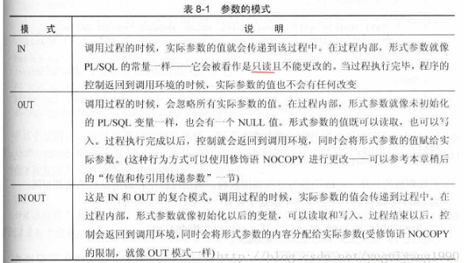

由于博主水平有限 下面语法记录有不对还请留下你珍贵的意见
mysql的基础数据类型
| 名称 | 类型 | 说明 |
|---|---|---|
| INT | 整型 | 4字节整数类型，范围约+/-21亿 |
| BIGINT | 长整型 | 8字节整数类型，范围约+/-922亿亿 |
| REAL | 浮点型 | 4字节浮点数，范围约+/-1038 |
| DOUBLE | 浮点型 | 8字节浮点数，范围约+/-10308 |
| DECIMAL | (M,N)高精度小数 | 由用户指定精度的小数，例如，DECIMAL(20,10)表示一共20位，其中小数10位，通常用于财务计算 |
| CHAR(N) | 定长字符串 | 存储指定长度的字符串，例如，CHAR(100)总是存储100个字符的字符串 |
| VARCHAR(N) | 变长字符串 | 存储可变长度的字符串，例如，VARCHAR(100)可以存储0~100个字符的字符串 |
| BOOLEAN | 布尔类型 | 存储True或者False |
| DATE | 日期类型 | 存储日期，例如，2018-06-22 |
| TIME | 时间类型 | 存储时间，例如，12:20:59 |
| DATETIME | 日期和时间类型 | 存储日期+时间，例如，2018-06-22 12:20:59 |
基础关键语法
1 | DELIMITER -- 声明语句结束符，用于区分; |
ps：在写sql存储过程的时候sql的关键字尽量都用大写
存储过程与各种变量
局部变量
局部变量只在BEGIN … END 代码块中有效，执行完代码块变量就会消失，在存储过程中最为常见的变量 DELIMITER是专门用来定义局部变量的可以使用DEFAULT来指定变量的默认值DELIMITER x，y INT DEFAULT 100; 定义了INT类型的变量x，y 并且赋予默认值为100 赋值用SET 或 SELECT
赋值例：
SELECT … INTO 语句 这个SELECT语法把选定的值直接存储到变量
1 | DECLARE total_count INT DEFAULT 0; -- 定义了INT类型变量total_count 默认值给予0 |
总结：这里的c就是局部变量
用户变量
用户变量与数据库的连接有关（一个客户端定义的变量不能被其他客户端使用）当客户端连接断开退出时，该客户端的变量将全部失效。用户变量不需要声明，可以直接使用，定义用户变量时变量名前必须要加@。
赋值例(一般用SET)：
1 | SET @varName = value; |
注1：”=”是比较操作符，判断两边参数是否相等，或者在更新语句中进行赋值
注2：“：=”主要是用于传递外部参数为语句中变量赋值
注3：赋值后输出用：SELECT @varName
注4：@c=@b*2是正确的，@b=@b+1是错误的，但SET @b=@b+1是正确的，这一点不像C++
系统变量
mysql可以访问许多系统变量。当服务器运行时许多变量允许动态更改，这样就可以在不重启服务器就可以完成更新了。系统变量又包含两种：会话变量(影响具体客户端连接操作)，全局变量(影响服务器整体操作)
全局变量
全局变量在mysql启动的时候由服务器初始化他们的值，这些默认值可以在/etc/my.cnf中修改。想要更改全局变量的值需要SUPER权限。全局变量作用域SERVER的生命周期，当服务器重启后所有全局变量值都失效，要想要全局变量在重启后生效，需要更改相应的配置文件
查看全局变量例：
1 | SHOW GLOBAL variables; -- 变量太多，一般不用 |
修改全局变量例：
1 | SET GLOBAL varname = value; |
会话变量
会话变量在每个数据库连接建立后，有mysql来初始化。mysql会将当前所有的全局变量都复制一份作为会话变量，相当于在建立会话之后，如果没有更改过会话变量与全局变量的值，那么这两份变量的值是完全一致的。设置会话变量不需要特殊权限，会话变量的作用域与用户变量一样，仅限于当前连接客户端。
查看会话变量例：
1 | SHOW SESSION variables; -- 变量太多，一般不用 |
修改会话变量例：
1 | SET SESSION varname = value; -- 变量太多，一般不用 |
SESSION关键字，都可以用LOCAL关键字来代替。
创建存储过程
CREATE PROCEDURE proc_first 不带参数
BEGIN
...sql语句
END
CREATE PROCEDURE proc_first(OUT p INT) 带参数
BEGIN
...sql语句
END
下面是存储过程的例子：
1 | DELIMITER $$ |
存储过程参数（in）

存储过程 “in” 参数：跟 C 语言的函数参数的值传递类似， 存储过程内部可能会修改此参数，但对 in 类型参数的修改，对调用者（caller）来说是不可见的（not visible）。
例子：
1 | DELIMITER $$ |
执行结果：
1 | SET @p_in = 1; |
总结：以上可以看出，p_in虽然在存储过程中改变了值 但是并不影响外部@p_in的值(值传递)
存储过程参数（out）
存储过程 “out” 参数：从存储过程内部传值给调用者。在存储过程内部，该参数初始值为 null，无论调用者是否给存储过程参数设置值
例子：
1 | DELIMITER $$ |
执行结果：
1 | SET @p_out = 1; |
总结：由以上可以看出第一个值是为NULL 因为使用OUT参数时他会忽略掉所有的实际参数值 他会在存储过程内部进行赋值 然后存储过程结束后他会把值返回出去
存储过程参数（inout）
存储过程 inout 参数跟 out 类似，都可以从存储过程内部传值给调用者。不同的是：调用者还可以通过 inout 参数传递值给存储过程。
例子：
1 | DELIMITER $$ |
执行结果：
1 | SET @p_inout = 1; |
总结：存储过程 inout 参数的行为跟 C 语言函数中的引用传值类似
通过以上例子：如果仅仅想把数据传给 MySQL 存储过程，那就使用“in” 类型参数；如果仅仅从 MySQL 存储过程返回值，那就使用“out” 类型参数；如果需要把数据传给 MySQL 存储过程，还要经过一些计算后再传回给我们，此时，要使用“inout” 类型参数。
删除存储过程
1 | /* |
存储过程调用
1 | CALL 存储过程名字() 后面的括号必不可少 |
修改存储过程
1 | ALTER PROCEDURE 存储过程名 |
查看一个已存在的存储过程
1 | SHOW CREATE PROCEDURE 存储过程名 |
列出所有的存储过程
1 | SHOW PROCEDURE STATUS |
设置安全验证方式
1 | SQL SECURITY { DEFINER | INVOKER } ：指明谁有权限来执行。 |
例：
1 | DELIMITER $$; |
总结：任意用户X访问此VIEW时，能否成功取决于X是否有调用该VIEW的权限，以及DEFINER是否有VIEW中的SELECT的权限。只需要修改创建同名用户或者修改DEFINER即可。
1 | alter DEFINER = 'xx'@'localhost' view xxxx as ... |
复合语句
1 | [begin_label:] |
例：
1 | CREATE PROCEDURE doiterate(p1 INT) |
存储子程序可以使用BEGIN … END复合语句来包含多个语句。
statement_list 代表一个或多个语句的列表。statement_list之内每个语句都必须用分号（；）来结尾。
复合语句可以被标记(有特殊含义 上面的loop意思就是重复执行begin … end的代码块 LEAVE退出)。除非begin_label存在,否则end_label不能被给出,并且如果二者都存在,他们必须是同样的。
mysql官网语法
MySQL存储过程的控制语句
变量作用域
内部的变量在其作用域范围内享有更高的优先权，当执行到end。变量时，内部变量消失，此时已经在其作用域外，变量不再可见了，应为在存储过程外再也不能找到这个申明的变量，但是你可以通过out参数或者将其值指派给会话变量来保存其值。
1 | DELIMITER $$ |
条件语句
条件判断语句
1 | IF |
- IF NOT EXISTS 即如果不存在 IF EXISTS 即如果存在
分支语句
1 | CASE |
循环1
1 | WHILE ···· END WHILE |
循环2
1 | REPEAT···· END REPEAT |
MySQL中的while循环和repeat循环的区别
- while是满足条件才执行循环，repeat是满足条件退出循环；
- while在首次循环执行之前就判断条件，最少执行0次，repeat是在首次执行循环之后才判断条件，循环至少执行一次。
循环3
1 | LOOP ·····END LOOP |
标号
LABLES
标号可以用在BEGIN REPEAT WHILE 或者LOOP 语句前，语句标号只能在合法的语句前面使用。可以跳出循环，使运行指令达到复合语句的最后一步。
迭代
1 | ITERATE |
例：
1 | DELIMITER $$ |
在上面存储过程中我们首先在LOOP语句开始前声明了一个loop_label，然后在if语句总判断变量x是否大于10，如果大于10会使用LEAVE语句退出循环，而如果x是奇数时则会回到循环开始继续执行，这有点像continue语句，否则对str执行concat操作，并进入下一次循环
总结：LOOP、LEAVE、ITERATE更像其他编程语言中的goto语句。 LOOP要设定一个label指定循环的开始位置，而LEAVE则像其他语言中的break会离开LOOP指定的块，ITERATE则会再次回到LOOP开始的语句
MySQL存储过程的基本函数
字符串类
1 | CHARSET(str) -- 返回字串字符集 |
数学类
1 | ABS (number2 ) -- 绝对值 |
日期时间类
1 | ADDTIME (date2 ,time_interval )-- 将time_interval加到date2 |
MySql分页存储过程
MySql测试版本：5.0.41-community-nt
1 | DROP PROCEDURE IF EXISTS pr_pager; -- 如果有这个存储过程就删除 |
DETERMINISTIC
它表示一个函数在输入不变的情况下输出是否确定。如果你的函数当输入一样时,会返回同样的结果.这样, 数据库就用前一个计算的值,而不需要再重新计算一次.这对于使用函数索引等,会直到相当大的好处
调用:
1 | call pr_pager("t","var",3,3,"","",@result); |
select * into 用法
1 | 例1： |
GROUP BY
1 | 例1： |
查看列数
1 | select count(*) |
查看行
1 | select count(*) from 'ttt' |